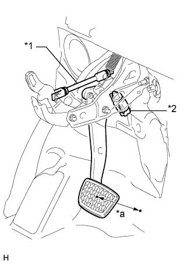
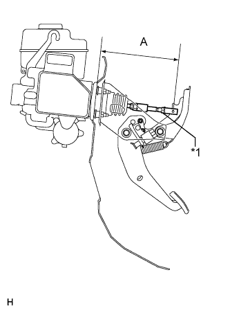
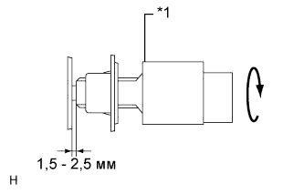
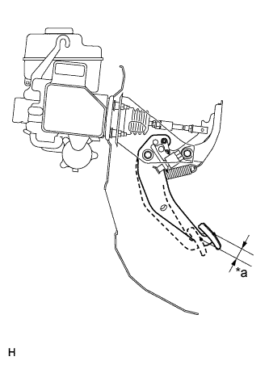
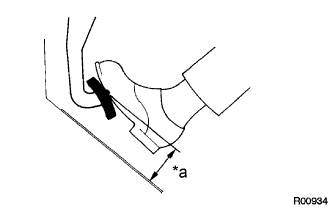

ПЕДАЛЬ ТОРМОЗА (для моделей с гидравлическим усилителем тормозной системы) > РЕГУЛИРОВКА |
| 1. ПРОВЕРЬТЕ ВЫСОТУ ПЕДАЛИ ТОРМОЗА |
|  |
Проверьте высоту педали тормоза.
| Параметр / Устройство | Заданные условия |
| Для моделей с левосторонним рулевым управлением | 160,2 - 170,2 мм (6,31 - 6,71 дюйма) |
| Для моделей с правосторонним рулевым управлением | 160,4 - 170,4 мм (6,31 - 6,71 дюйма) |
| *a | Высота педали |
| *1 | Переходник управления тягой |
| *2 | Выключатель стоп-сигналов в сборе |
|  |
Отрегулируйте длину переходника управления тягой.
Снимите фиксатор и штифт вилки.
Ослабьте контргайку вилки штока.
| *1 | Контргайка вилки |
Отрегулируйте длину переходника управления тягой, поворачивая вилку штока педали.
Затяните контргайку вилки штока.
Установите фиксатор и штифт вилки.
При неправильной высоте педали, даже если если регулируется переходник управления тягой, убедитесь, что нет повреждений педали тормоза, рычага педали тормоза, кронштейна педали тормоза и шумоизолирующей подкладки.
| 2. ПРОВЕРЬТЕ И ОТРЕГУЛИРУЙТЕ ВЫКЛЮЧАТЕЛЬ СТОП-СИГНАЛОВ В СБОРЕ |
Отсоедините разъем выключателя стоп-сигналов в сборе от выключателя стоп-сигналов в сборе.
Поверните выключатель стоп-сигналов в сборе против часовой стрелки и снимите его.
|  |
Вставьте выключатель стоп-сигналов в сборе до упора, чтобы его корпус коснулся подкладки.
| *1 | Выключатель стоп-сигналов |
Для установки поверните выключатель стоп-сигналов в сборе на четверть оборота по часовой стрелке.
Подсоедините разъем выключателя стоп-сигналов к выключателю стоп-сигналов в сборе.
Проверьте выступание штока.
Установите штифт вилки и фиксатор.
После регулировки высоты педали проверьте ее свободный ход.
| 3. ПРОВЕРЬТЕ СВОБОДНЫЙ ХОД ПЕДАЛИ ТОРМОЗА |
|  |
Остановите двигатель и несколько раз нажмите на педаль тормоза, чтобы в усилителе не осталось отрицательного давления.
| *a | Свободный ход педали тормоза |
Нажимайте на педаль до тех пор, пока не почувствуете сопротивление. Измерьте расстояние.
| 4. ПРОВЕРЬТЕ ОСТАТОЧНЫЙ ХОД ПЕДАЛИ ТОРМОЗА |
|  |
Отпустите стояночный тормоз.
Нажмите на педаль тормоза при работающем двигателе и измерьте остаточный ход педали.
| *a | Запас хода педали |
| Параметр / Устройство | Заданные условия |
| Для моделей с левосторонним рулевым управлением (с механической трансмиссией) | Более 94 мм (3,70 дюйма) |
| Для моделей с левосторонним рулевым управлением (с автоматической трансмиссией) | Более 101 мм (3,98 дюйма) |
| Для моделей с правосторонним рулевым управлением | Более 101 мм (3,98 дюйма) |